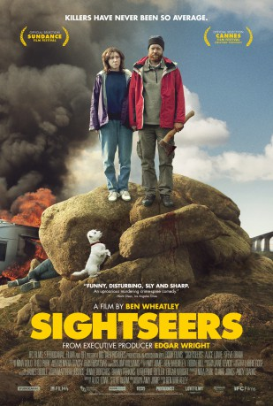

IMDB-Wertung: 6.5 / 10
IMDB-Wertung: 6.5 / 10  Metascore:
Metascore: 
Chris wants to show girlfriend Tina his world, but events soon conspire against the couple and their dream caravan holiday takes a very wrong turn.
Alternativ: Sightseers
 IMDB-Wertung: 6.5 / 10 Metascore:
Chris wants to show girlfriend Tina his world, but events soon conspire against the couple and their dream caravan holiday takes a very wrong turn.
Jahr: 2012
Dauer: 88 Minuten
FSK: 16
Land: England Studio: MFA FilmdistributionTonspuren: DTS - ,
Untertitel:
Auflösung: 1080p (1920x800) Größe: 4290 MB
Genre: Horror, Komödie, Abenteuer, Krimi, Liebe
Regisseur: Ben Wheatley
Drehbuch: Peter Bardehle
Soundtrack:
Darsteller:
 Alice Lowe als Tina
Alice Lowe als Tina Eileen Davies als Carol
Eileen Davies als Carol Steve Oram als Chris
Steve Oram als Chris Tony Way als Crich Tourist
Tony Way als Crich Tourist Monica Dolan als Janice
Monica Dolan als Janice Jonathan Aris als Ian
Jonathan Aris als Ian Aymen Hamdouchi als Chalid Sulinan
Aymen Hamdouchi als Chalid Sulinan Sara Stewart als Blond Boy's Mother
Sara Stewart als Blond Boy's Mother Richard Glover als Martin
Richard Glover als Martin Sara Dee als Radio Voices
Sara Dee als Radio Voices John Hurt als Narrator - Blake's
John Hurt als Narrator - Blake's  Lucy Russell als Lynne Marshall , uncredited
Lucy Russell als Lynne Marshall , uncreditedDatei: X:\2012(N-Z)\Sightseers - Killers on Tour! (2012, FSK16, 1920x800).mkv seit 25.04.2017
Festplatte: HD 2012(N-Z)-2013(A-H)
 Es gibt insgesamt 138 Filme in der Gruppe '2012(N-Z)'
Es gibt insgesamt 138 Filme in der Gruppe '2012(N-Z)'